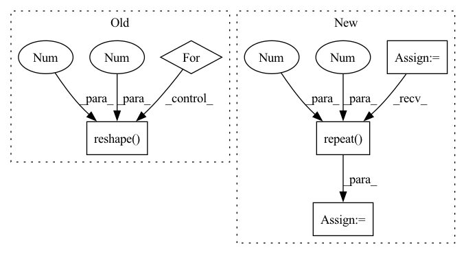

Pattern ID :26212
Before Change
score = F.log_softmax(y, dim=2) // calculate loss by NLLoss
// 因为是补齐了的，所以需要找到真正的 score
loc_len = batch.get_origin_len("current_loc")
for i in range(score.shape[0]):
if i == 0:
true_scores = score[i][loc_len[i] - 1].reshape(1, -1)
else:
true_scores = torch.cat(
(true_scores, score[i][loc_len[i] - 1].reshape(1 , -1 ) ), 0)
return true_scores
def predict(self, batch):After Change
out, out_len = pad_packed_sequence(out, batch_first=True)
// out = out.permute(1, 0, 2)
origin_len = batch.get_origin_len("current_loc")
final_out_index = torch.tensor(origin_len) - 1
final_out_index = final_out_index.reshape(final_out_index.shape[0], 1, -1)
final_out_index = final_out_index.repeat(1 , 1 , self.hidden_size) .to(self.device)
out = torch.gather(out, 1, final_out_index).squeeze(1) // batch_size * hidden_size
out = F.selu(out)
out = self.dropout(out)
y = self.fc(out)
score = F.log_softmax(y, dim=1) // calculate loss by NLLoss
return score
def predict(self, batch):In pattern: SUPERPATTERN
Frequency: 3
Non-data size: 5
Instances Fragment ID: 78934196
Project Name: libcity/bigscity-libcity
Commit Name: ec61c9cd984d1c86ee715380ed3b65b4222c8d1f
Time: 2021-05-06
Author: 33283819+WenMellors@users.noreply.github.com
File Name: trafficdl/model/trajectory_loc_prediction/RNN.py
M Class Name: RNN
N Class Name: RNN
M Method Name: forward(2)
N Method Name: forward(2)
M Parent Class: AbstractModel
N Parent Class: AbstractModel
M File Name: trafficdl/model/trajectory_loc_prediction/RNN.py
N File Name: trafficdl/model/trajectory_loc_prediction/RNN.py
M Start Line: 87
M End Line: 97
N Start Line: 84
N End Line: 94
Before Change
score = F.log_softmax(y, dim=2) // calculate loss by NLLoss
// 因为是补齐了的，所以需要找到真正的 score
loc_len = batch.get_origin_len("current_loc")
for i in range(score.shape[0]):
if i == 0:
true_scores = score[i][loc_len[i] - 1].reshape(1 , -1 )
else:
true_scores = torch.cat(
(true_scores, score[i][loc_len[i] - 1].reshape(1, -1)), 0)
return true_scoresAfter Change
// out = out.permute(1, 0, 2)
origin_len = batch.get_origin_len("current_loc")
final_out_index = torch.tensor(origin_len) - 1
final_out_index = final_out_index.reshape(final_out_index.shape[0], 1, -1)
final_out_index = final_out_index.repeat(1 , 1 , self.hidden_size) .to(self.device)
out = torch.gather(out, 1, final_out_index).squeeze(1) // batch_size * hidden_size
out = F.selu(out)
out = self.dropout(out)
Fragment ID: 78934197
Project Name: libcity/bigscity-libcity
Commit Name: ec61c9cd984d1c86ee715380ed3b65b4222c8d1f
Time: 2021-05-06
Author: 33283819+WenMellors@users.noreply.github.com
File Name: trafficdl/model/trajectory_loc_prediction/RNN.py
M Class Name: RNN
N Class Name: RNN
M Method Name: forward(2)
N Method Name: forward(2)
M Parent Class: AbstractModel
N Parent Class: AbstractModel
M File Name: trafficdl/model/trajectory_loc_prediction/RNN.py
N File Name: trafficdl/model/trajectory_loc_prediction/RNN.py
M Start Line: 87
M End Line: 97
N Start Line: 84
N End Line: 94
Before Change
y = self.fc_final(out) // batch_size * state_len * loc_size
score = F.log_softmax(y, dim=2)
// 因为是补齐了的，所以需要找到真正的 score
for i in range(score.shape[0]):
if i == 0:
true_scores = score[i][loc_len[i] - 1].reshape(1 , -1 )
else:
true_scores = torch.cat(
(true_scores, score[i][loc_len[i] - 1].reshape(1, -1)), 0)
return true_scoresAfter Change
out = torch.cat((hidden_state, context), 2)
// 因为是补齐了的，所以需要找到真正的 out
origin_len = batch.get_origin_len("current_loc")
final_out_index = torch.tensor(origin_len) - 1
final_out_index = final_out_index.reshape(final_out_index.shape[0], 1, -1)
final_out_index = final_out_index.repeat(1 , 1 , 2*self.hidden_size) .to(self.device)
out = torch.gather(out, 1, final_out_index).squeeze(1) // batch_size * (2*hidden_size)
out = self.dropout(out)
Fragment ID: 78934192
Project Name: libcity/bigscity-libcity
Commit Name: ec61c9cd984d1c86ee715380ed3b65b4222c8d1f
Time: 2021-05-06
Author: 33283819+WenMellors@users.noreply.github.com
File Name: trafficdl/model/trajectory_loc_prediction/DeepMove.py
M Class Name: DeepMove
N Class Name: DeepMove
M Method Name: forward(2)
N Method Name: forward(2)
M Parent Class: AbstractModel
N Parent Class: AbstractModel
M File Name: trafficdl/model/trajectory_loc_prediction/DeepMove.py
N File Name: trafficdl/model/trajectory_loc_prediction/DeepMove.py
M Start Line: 122
M End Line: 175
N Start Line: 152
N End Line: 163
Before Change
// masked by the missing entries
// note, different batch may contain different number of real entities
tensor_list = []
for i, batch in enumerate(out):
mean_entity = 0.
real_number = real_number_tensor[i]
real_number = real_number if real_number != 0 else 1
for j, entity in enumerate(batch):
if j >= real_number_tensor[i]:
break
mean_entity = mean_entity + entity
mean_entity = mean_entity / (real_number)
tensor_list.append(mean_entity.reshape(1 , -1 ) )
tensor_mean = torch.cat(tensor_list, dim=0)
print("tensor_mean:", tensor_mean) if debug else None
After Change
// mask for transformer need a special format
mask_seq_len = mask.shape[-1]
tran_mask = mask.unsqueeze(1)
// tran_mask: [batch_seq_size x max_entities x max_entities]
tran_mask = tran_mask.repeat(1 , mask_seq_len, 1 )
// out: [batch_seq_size x entities_size x embeding_size]
out = self.transformer(x, mask=tran_mask)
Fragment ID: 78934206
Project Name: liuruoze/mini-alphastar
Commit Name: 612d42a7bf5ef827e1e919198d839fce106155cd
Time: 2021-11-25
Author: liuruoze@163.com
File Name: alphastarmini/core/arch/entity_encoder.py
M Class Name: EntityEncoder
N Class Name: EntityEncoder
M Method Name: forward(3)
N Method Name: forward(2)
M Parent Class: nn.Module
N Parent Class: nn.Module
M File Name: alphastarmini/core/arch/entity_encoder.py
N File Name: alphastarmini/core/arch/entity_encoder.py
M Start Line: 721
M End Line: 758
N Start Line: 716
N End Line: 778